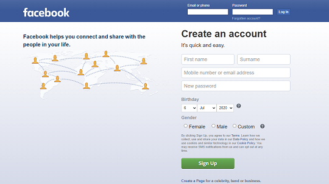
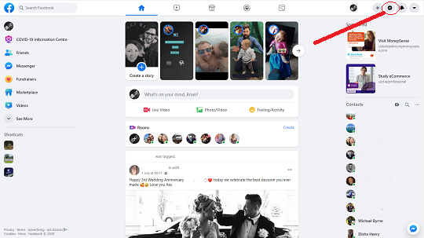
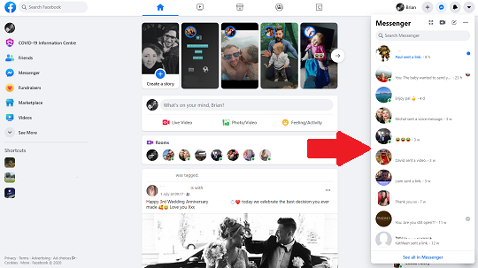
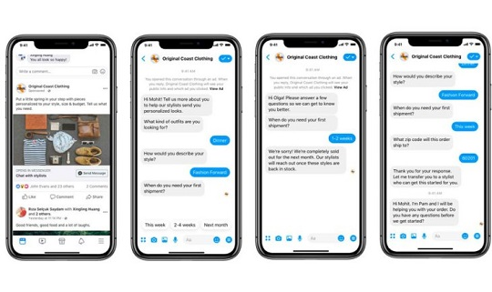

Step 1:
Sign In to your Facebook account. If you don't have an account you will need to create one by going to Facebook. Click sign up and fill in your details.
Step 2:
Once logged on to Facebook, in the top right of the screen is the Messenger logo, a speech bubble with a lightening bolt. Click this to open Messenger in a sidebar of youur screen.
Step 3:
The sidebar will show all your conversations, if any. Just click on a contact to see your conversation history with that person.
Iphone and Android
To download Messenger on your phone or tablet, open the Google Play Store on Android devices or the App Store on Apple devices and search for Facebook Messenger. Press the image and press install.